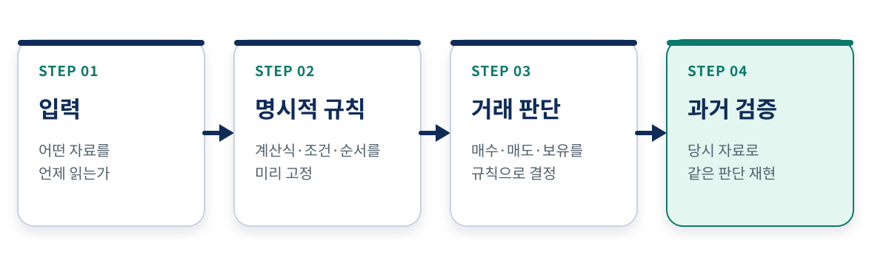
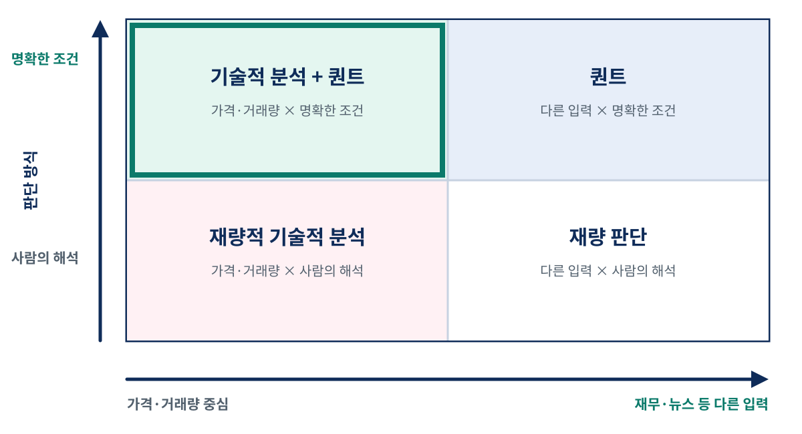
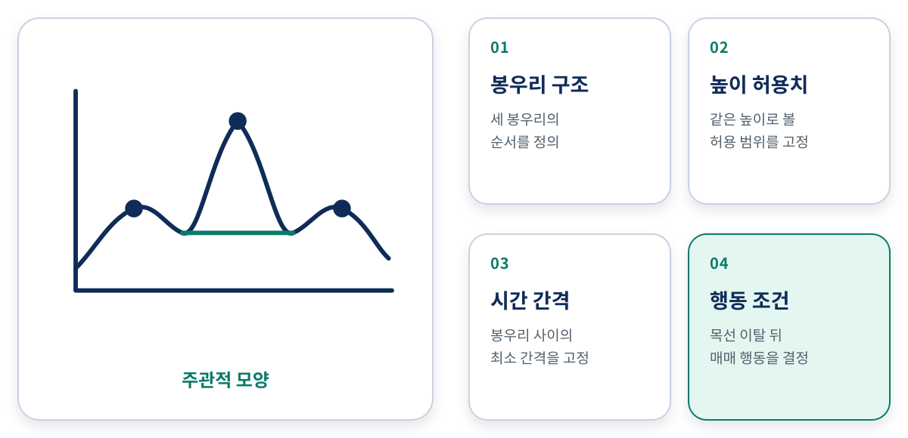
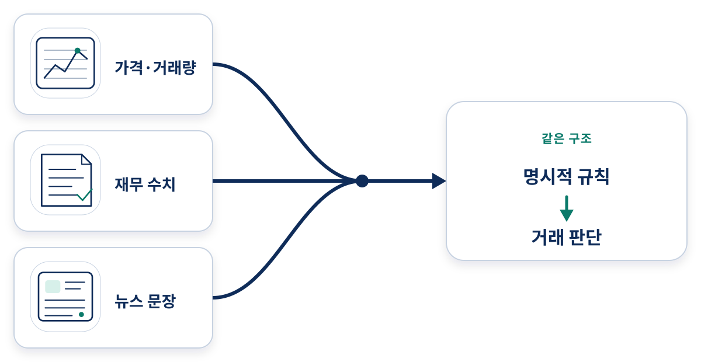
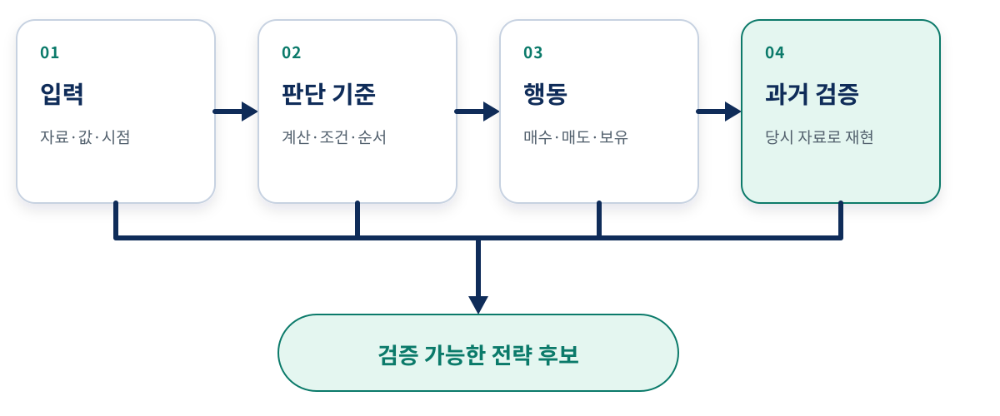

강의 상세 리포트
퀀트 트레이딩이란 무엇이고 기술적 분석과 무엇이 다른가
무엇을 보느냐보다 어떻게 판단하느냐가 중요하다
먼저 결론부터
한 문장 정의
이 차시에서 말하는 퀀트 트레이딩(quantitative trading) 은 가격·거래량과 그 밖의 자산·시장 특성을 수량화해 거래 판단 규칙으로 연결하는 방식이다. Rossi와 Tinn은 학술 논문에서 퀀트 트레이딩을 바로 이처럼 가격·거래량 및 다른 자산·시장 특성의 정량 분석에 기초한 전략으로 정의한다. 이 리포트는 여기에 Chan이 강조한 알고리즘 판단과 과거 검증을 결합해 초보자가 적용할 수 있는 최소 기준으로 정리한다 (Rossi & Tinn, 2021).
여기서 핵심어는 “컴퓨터”, “숫자” 또는 “자동 주문” 하나가 아니다. 동일한 입력을 주면 동일한 판단을 다시 만들 수 있는 명시적 규칙이 이 리포트의 판별 기준이다. SEC도 알고리즘을 컴퓨터 프로그램으로 구현할 수 있는 유한하고 결정적인 문제 해결 절차로 설명한다 (SEC Staff, 2020, pp. 4–5).
가격도, 재무 수치도, 뉴스도 입력이 될 수 있다.
주문창을 클릭한 것만으로는 퀀트가 되지 않는다.
같은 입력이면 언제나 같은 매수·매도 판단이 나와야 한다.

| 질문 | 짧은 답 |
|---|---|
| 차트나 가격을 쓰면 모두 퀀트인가 | 아니다. 사람이 모양을 주관적으로 판독하면 퀀트 규칙이 아니다 |
| 기술적 분석은 퀀트에 들어갈 수 있는가 | 진입·청산 조건을 수치와 논리로 명확히 정의하면 들어갈 수 있다 |
| 퀀트는 가격·거래량만 보는가 | 아니다. 재무 수치와 뉴스처럼 컴퓨터가 처리할 수 있는 정보도 입력이 된다 |
| 자동으로 주문해야만 퀀트인가 | 이 정의의 중심은 주문 속도가 아니라 알고리즘의 매수·매도 판단이다 |
| 판단 기준을 코드로 구현하면 수익이 보장되는가 | 아니다. 코드화 가능성과 수익성은 별개의 문제다 |
퀀트 트레이딩의 핵심은 무엇인가
퀀트의 판단 기준을 네 요소로 나누어 보기
퀀트 트레이딩을 단순히 “컴퓨터로 하는 거래”라고 기억하면 범위가 너무 넓다. 주문창을 컴퓨터에서 클릭하는 것도 컴퓨터를 쓰는 거래이기 때문이다. SEC의 보고서는 알고리즘이 종목 선택, 가격, 주문 크기, 위험 판단, 주문시장 선택처럼 서로 다른 결정을 맡을 수 있음을 보여 준다. 그중 이 차시가 다루는 투자·거래 판단 규칙의 구분 기준을 네 부분으로 나누면 다음과 같다 (SEC Staff, 2020, pp. 4–5).
| 구성 요소 | 확인할 질문 | 왜 중요한가 |
|---|---|---|
| 입력 | 알고리즘이 읽을 수 있는 데이터로 만들 수 있는가 | 사람이 눈으로만 느끼는 인상은 그대로 계산할 수 없다 |
| 판단 기준 | 입력에서 매수·매도 판단으로 가는 계산식·조건·순서가 명확한가 | “좋아 보이면 산다”에 남은 해석은 사람마다 달라진다 |
| 행동 | 규칙의 출력이 매수·매도·보유 같은 결정으로 이어지는가 | 설명이나 예측만 하고 거래 행동을 정하지 않으면 아직 전략이 아니다 |
| 과거 검증 | 같은 판단 기준을 과거 금융 데이터에 적용할 수 있는가 | 명확한 정의와 과거에 작동했다는 증거를 분리한다 |
알고리즘을 만든 주체는 사람이다. 컴퓨터가 스스로 투자 철학을 갖는다는 뜻이 아니다. 사람은 어떤 정보를 쓸지, 어떤 조건에서 행동할지, 어느 기간으로 점검할지를 정한다. 컴퓨터는 그 결정을 명시된 그대로 반복한다. 즉 퀀트 트레이딩은 사람의 판단이 사라진 거래가 아니라, 사람이 매번 판단하는 대신 매매 기준을 미리 정의해 두는 거래에 가깝다.
자동 주문과 알고리즘 판단은 구분한다
규칙이 신호를 냈는데 사람이 주문 버튼을 누를 수도 있고, 주문 전송까지 프로그램이 맡을 수도 있다. 두 개념을 같은 것으로 묶어서는 안 된다. SEC는 투자 판단을 만드는 알고리즘과 이미 생긴 주문을 나누어 보내는 라우팅·체결 알고리즘을 구분한다. MiFID II의 규제 정의는 알고리즘이 주문 개시 여부·시점·가격·수량 같은 주문 파라미터를 자동으로 정하는 경우에 초점을 둔다. 따라서 “퀀트 연구·판단”, “알고리즘 주문”, “고빈도 실행”은 겹칠 수 있지만 동의어가 아니다 (SEC Staff, 2020, pp. 29, 33–35; MiFID II, Art. 4(1)(39)).
핵심 구분: 이 차시에서는 주문 전송 속도보다 투자 아이디어에서 매수·매도·보유로 가는 판단 규칙을 본다. 규제 문맥의 “알고리즘 트레이딩”은 주문 파라미터 자동화까지 포함하므로, 문맥을 확인하지 않고 퀀트와 같은 뜻으로 쓰지 않는다.
기술적 분석과 퀀트는 어떻게 겹치는가
둘은 서로 반대말이 아니다
기술적 분석은 주로 과거 가격과 거래량의 움직임에서 패턴이나 신호를 찾는다. Lo, Mamaysky와 Wang은 차트 모양이 관찰자의 눈에 달려 있다는 주관성을 핵심 난점으로 지적하고, 가격 시계열의 국소 극값을 이용해 패턴을 자동 인식하는 절차를 제시했다. 즉 기술적 분석은 그 자체로 재량일 수도 있고, 진입·청산 조건을 수치와 논리로 구체화하면 퀀트 전략으로 만들 수도 있다 (Lo, Mamaysky & Wang, 2000). 퀀트 트레이딩은 어떤 자료를 쓰는지보다 판단 절차가 누구에게나 같은 결론을 내도록 정의됐는지를 묻는다. 서로 구분하는 기준이 다르므로 둘은 일부가 겹치지만 같은 개념은 아니다.

| 가격·거래량 중심 입력 | 재무·뉴스 등 다른 입력 | |
|---|---|---|
| 매매 조건을 수치로 명확히 정의 | 기술적 분석이면서 퀀트 — 예: 수치로 정의한 이동평균 교차 | 퀀트지만 전통적 기술적 분석은 아님 — 예: 매출 성장률 기준, 뉴스 분류 신호 |
| 사람의 해석이 남음 | 기술적 분석이지만 아직 퀀트가 아님 — 예: 눈으로 찾는 헤드 앤 숄더 | 재량 판단 — 예: 경영진의 인상이 좋아 보여 매수 |
표의 왼쪽 위가 두 영역의 교집합이다. 가격과 거래량을 쓰는 기술적 규칙도 조건과 계산 순서가 명확하면 퀀트 시스템의 일부가 될 수 있다. 반대로 왼쪽 아래처럼 사람이 차트를 보고 그때그때 모양을 판단해야 한다면, 컴퓨터가 같은 결론을 반복할 수 없어 아직 퀀트 규칙이 아니다.
“헤드 앤 숄더를 찾아라”가 부족한 이유
원문은 주관적이고 수량화하기 어려운 차트 기법의 예로 헤드 앤 숄더 패턴을 든다. 이름이 붙은 패턴이라는 사실만으로는 컴퓨터가 찾을 수 없다. Lo 등은 먼저 패턴을 국소 최대·최소의 기하학적 순서로 정의한 다음, 가격 곡선의 극값을 수치로 찾고, 그 순서가 나타나는지 검사했다. 이 리포트의 ε·N·k는 그 논리를 초보자용 질문으로 단순화하기 위해 넣은 예시 기호다. 적어도 봉우리의 개수, 봉우리 사이의 최소 간격, 양쪽 어깨의 허용 높이 차이, 목선의 기울기와 이탈 조건을 숫자로 정해야 한다 (Lo, Mamaysky & Wang, 2000, §II).

그 조건을 모두 정하면 기술적 분석이 퀀트 규칙으로 들어올 수 있다. 다만 코드화할 수 있다는 말은 좋은 전략이다라는 말이 아니다. 정의가 명확해진 뒤에야 과거 데이터로 검증해 볼 수 있는 후보가 되었을 뿐이다.
퀀트는 가격 차트만 보지 않는다
컴퓨터가 읽을 수 있으면 입력으로 쓸 수 있다
Chan은 퀀트 시스템이 가격·거래량뿐 아니라 매출, 현금흐름, 부채비율 같은 재무 수치도 입력으로 쓸 수 있다고 설명한다. 이는 교재만의 예가 아니다. Fama와 French는 기업 규모와 장부가치/시장가치 같은 변수를 이용해 주식 수익률의 공통 변동을 설명하는 요인을 구성했다. 가격 차트 밖의 기업 특성도 정량 모델의 입력이 될 수 있음을 보여 주는 대표 사례다 (Fama & French, 1993).
뉴스도 입력으로 쓸 수 있다. Tetlock은 월스트리트저널 칼럼의 단어를 정량화해 미디어 비관도와 시장 가격·거래량의 관계를 검증했다. 이것은 “뉴스를 읽는다”가 곧 전략이라는 뜻이 아니라, 텍스트를 측정 가능한 변수로 바꾸고 가설을 검사할 수 있다는 실증 사례다 (Tetlock, 2007). 뉴스 문장을 수치나 분류값으로 바꾸고 그 결과를 매매 규칙에 연결할 수 있다면 뉴스도 퀀트에 활용할 수 있다.

| 아이디어 | 입력 | 판단 규칙 | 분류 |
|---|---|---|---|
| 20일 평균이 60일 평균을 위로 통과하면 매수 | 종가 | 기간·교차·행동이 수치로 고정 | 기술적 분석 + 퀀트 |
| 차트가 상승할 것처럼 보여 매수 | 가격 차트 | “보인다”의 기준이 없음 | 재량적 기술적 분석 |
| 매출 성장률이 기준값보다 높으면 후보 편입 | 재무 수치 | 계산식·기준·시점이 고정 | 퀀트(기술적 분석은 아님) |
| 뉴스가 특정 범주로 분류되면 비중 조정 | 뉴스 텍스트 | 분류 결과와 행동을 연결 | 퀀트(기술적 분석은 아님) |
| 회사 분위기가 좋아 보여 매수 | 사람의 인상 | 반복 가능한 규칙이 없음 | 둘 다 아님 |
그렇다고 아무 정보나 쓸 수 있는 것은 아니다
“어떤 정보든 퀀트에 쓸 수 있다”는 말은 아무 자료나 넣으면 유용하다는 뜻이 아니다. 정보가 컴퓨터가 읽을 수 있는 형태로 바뀌어야 하고, 그 정보에서 행동으로 가는 규칙도 명시되어야 한다. 그리고 과거 데이터에 적용할 때는 그 당시 실제로 알 수 있었던 정보만 사용해야 한다. 이를 검증하는 방법은 뒤의 백테스트 과정에서 다룬다.
퀀트로 착각하기 쉬운 세 가지 경우
1. 숫자를 썼다고 모두 퀀트는 아니다
점수나 지표를 계산해도 마지막에 “전문가가 보기에 괜찮으면 매수”가 남아 있으면 판단 규칙은 완결되지 않았다. 숫자는 재료일 뿐이다. 입력에서 행동까지 연결되어야 한다.
2. 코드가 돌아간다고 규칙이 명확한 것은 아니다
코드는 모호한 요구도 임의의 기준으로 채워 실행할 수 있다. “큰 거래량”, “최근”, “뚜렷한 추세” 같은 말이 코드 안에서 어떤 수치로 바뀌었는지 설명하지 못하면, 실행 가능성만 확인한 것이지 원래 아이디어를 충실히 표현했는지는 확인하지 못했다.
3. 과거 수익이 좋아도 전략 정의가 맞는 것은 아니다
수익 곡선만으로는 전략을 정의할 수 없다. 어떤 입력을 어느 시점에 읽고 어떤 조건에서 무엇을 샀는지 다시 만들 수 있어야 한다. 정의가 고정되지 않으면 결과가 좋아 보일 때까지 규칙을 바꿨는지조차 구분하기 어렵다. Bailey 등은 유한한 과거 데이터에서 많은 전략 변형을 시험할수록 우연히 좋아 보이는 결과를 고를 위험이 커지는 백테스트 과적합을 별도의 통계 문제로 다룬다. 따라서 같은 규칙을 다시 실행할 수 있다는 것은 검증의 시작일 뿐, 성과가 입증됐다는 뜻은 아니다 (Bailey et al., 2017).
| 착각 | 빠진 것 | 바로잡는 질문 |
|---|---|---|
| 지표를 계산했으니 퀀트다 | 행동 규칙 | 이 숫자가 얼마일 때 무엇을 하는가 |
| 프로그램이 돌아가니 명확하다 | 요구와 구현의 일치 | 모호한 단어가 코드에서 어떤 값이 되었는가 |
| 과거 수익이 좋으니 검증된 전략이다 | 재현 가능한 정의 | 다른 사람이 같은 입력으로 같은 거래를 만들 수 있는가 |
아이디어를 검증 가능한 전략 후보로 바꾸는 네 가지 질문
네 문장으로 정리한다
“좋아 보이는 종목을 산다” 같은 아이디어를 바로 코드로 넘기지 않는다. 먼저 아래 네 요소를 구체화한다. 하나라도 빠지면 컴퓨터가 판단할 수 없는 부분을 누군가 임의로 메워야 한다.
- 입력 — 어떤 자료의 어느 필드를, 어느 시점 기준으로 읽는가.
- 판단 기준 — 계산 순서와 임계값은 무엇인가.
- 행동 — 매수·매도·보유 중 무엇을, 언제 결정하는가.
- 검증 — 같은 판단 기준을 어느 과거 기간에 다시 적용할 것인가.

최종 점검표
| 확인 항목 | 통과 기준 | 실패 예시 |
|---|---|---|
| 입력이 식별되는가 | 자료·필드·시점을 구체적으로 정한다 | “시장 분위기”만 적혀 있다 |
| 조건이 계산 가능한가 | 수식·순서·임계값이 고정돼 있다 | “충분히 크면”이 남아 있다 |
| 행동이 결정되는가 | 조건별 매수·매도·보유가 정해져 있다 | 지표만 출력하고 끝난다 |
| 반복 가능한가 | 같은 입력이면 같은 판단이 나온다 | 분석자마다 결론이 다르다 |
| 과거에 적용 가능한가 | 당시 이용 가능한 입력으로 같은 판단을 재현할 수 있다 | 결과를 본 뒤 조건을 정한다 |
이 점검표를 통과하면 아이디어는 비로소 검증 가능한 전략 후보가 된다. 아직 좋은 전략도, 실전 가능한 전략도 아니다. 이후 과정에서 데이터 편향, 거래비용, 위험, 성과의 안정성을 별도로 검증해야 한다.
이번 차시를 마치며: 퀀트 전략은 같은 입력에서 같은 판단이 나오도록 매매 기준을 컴퓨터가 판정할 수 있게 정의한다. 기술적 분석도 진입과 청산 조건을 수치로 구체화하면 퀀트 전략이 될 수 있다. 다만 명확한 판단 기준만으로 수익성이 증명되지는 않는다.
용어와 출처
핵심 용어
| 용어 | 이 리포트에서의 뜻 |
|---|---|
| 퀀트 트레이딩 | 가격·거래량과 다른 자산·시장 특성을 수량화해 명시적 거래 판단 규칙으로 연결하는 방식 |
| 알고리즘 트레이딩 | 문맥에 따라 투자 판단부터 주문의 시점·가격·수량·경로 자동화까지 뜻하는 시장·규제 용어. 퀀트 트레이딩과 완전히 같은 말은 아니다 |
| 자동 체결 알고리즘 | 이미 내린 주문을 VWAP·TWAP 같은 목표에 따라 나누어 보내는 실행 도구. 투자 아이디어를 고르는 규칙과는 다르다 |
| 기술적 분석 | 주로 과거 가격·거래량의 움직임과 패턴을 바탕으로 판단하는 분석 |
| 코드화 | 사람의 추가 해석 없이 입력·계산·조건·행동을 프로그램으로 표현하는 것 |
| 과거 검증 | 정해진 규칙을 과거 금융 데이터에 적용해 결과를 확인하는 것 |
근거 범위
Chan의 Quantitative Trading, 2nd edition (Wiley, 2021), Chapter 1, §§2.1–2.2를 강의 출발점으로 삼되, 용어가 교재 한 권의 표현에 갇히지 않도록 학술 논문과 규제기관 원문을 교차 확인했다. 자료마다 목적이 다르다. 학술 논문의 “퀀트 트레이딩”, 규제 문서의 “알고리즘 트레이딩”, 이 리포트의 초보자용 점검 기준을 모두 같은 뜻이라고 보지는 않는다.
외부 1차 자료에서 확인한 내용
| 자료 | 이 리포트에서 확인한 것 |
|---|---|
| Rossi, S. & Tinn, K. (2021), Rational Quantitative Trading in Efficient Markets, Journal of Economic Theory 191 | 가격·거래량뿐 아니라 다른 자산·시장 특성의 정량 분석에 기초한 거래라는 학술적 정의 |
| Lo, A. W., Mamaysky, H. & Wang, J. (2000), Foundations of Technical Analysis, Journal of Finance 55(4) | 기술적 차트 판독의 주관성과 패턴을 기하학적 조건으로 자동 인식하는 절차 |
| U.S. SEC Staff (2020), Staff Report on Algorithmic Trading in U.S. Capital Markets | 투자 판단 알고리즘과 주문 라우팅·체결 알고리즘이 맡는 결정의 차이 |
| European Parliament & Council (2014), MiFID II, Art. 4(1)(39) | 주문 개시·시점·가격·수량을 자동 결정하는 알고리즘 트레이딩의 규제 정의 |
| Fama, E. F. & French, K. R. (1993), Common Risk Factors in the Returns on Stocks and Bonds, Journal of Financial Economics 33 | 기업 규모와 장부가치/시장가치처럼 가격 차트 밖의 기업 특성을 정량 요인으로 구성한 사례 |
| Tetlock, P. C. (2007), Giving Content to Investor Sentiment, Journal of Finance 62(3) | 뉴스 텍스트를 정량 변수로 바꾸어 시장 가격·거래량과의 관계를 검증한 사례 |
| Bailey, D. H. et al. (2017), The Probability of Backtest Overfitting, Journal of Computational Finance 20(4) | 과거 데이터로 다시 실행할 수 있다는 사실만으로 전략의 유효성이 증명되지는 않으며, 반복 탐색이 과적합을 낳을 수 있다는 점 |
표 2·5·6과 그림 1·3·6의 판별 질문은 위 자료의 문장을 그대로 옮긴 표준 정의가 아니라, 학습자가 아이디어에서 빠진 요소를 찾도록 AIML Quant가 만든 학습용 점검 기준이다. 통과해도 수익성·위험·실전 가능성이 증명되지 않는다.
강의 자료 내려받기
웹에서 읽는 상세 리포트와 발표자료를 PDF로 저장해 두었고, 영상에서 설명한 네 가지 기준을 직접 채워 볼 수 있는 점검표도 함께 제공한다.
점검표를 모두 채웠다는 사실은 수익성을 뜻하지 않는다. 입력·판단 기준·행동·과거 검증이 빠짐없이 정의됐는지 확인하는 데 사용한다.